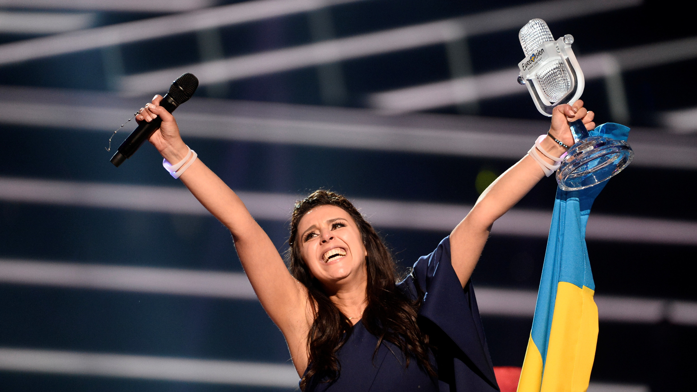

İsmim Nihad. 19 mayıs 2003'te Bakü'de doğdum. Lise eğitimimi Baküde gördüm. Üniversite eğitimim için Türkiyeyi tercih ettim ve şu an Sakarya üniversitesi bilgisayar mühendisliği bölümünde eğitim görmekteyim. Müzik dinlemeyi seviyorum. Genel olarak müziğe ilgim var. Orta okulda keman kursuna gittim. Ayrıca Eurovision müzik yarışmasını çok yakından takip ediyorum. Gezmeği, yabancı dil öğrenmeyi seviyorum. Ana dilim dışında türkçe, ingilizce ve rusça çok iyi konuşuyorum :) Rusça ve türkçeyi kendi başıma öğrendim. Bunların dışında kamp yapmayı web tasarımlaı yapmayı ve yabancı dizileri izlemeyi seviyorum. Daha fazla bilgi için sayfamın ilgili kısımlarına baka bilirsiniz :)